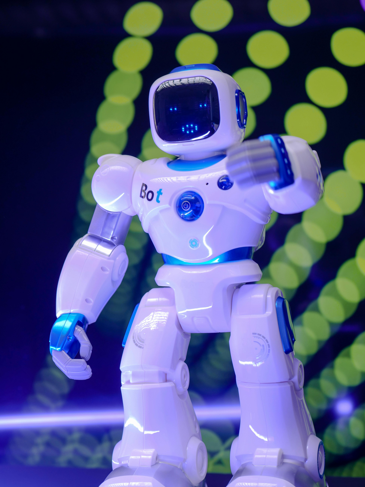

10 herramientas digitales para docentes
Publicado el 23 de junio de 2025
La tecnología bien utilizada puede mejorar la enseñanza, facilitar la evaluación y ahorrar tiempo al docente. Estas son 10 herramientas digitales que recomiendo a profesores de todos los niveles:
1. Google Classroom
Plataforma para gestionar clases virtuales, entregar tareas, calificar y comunicarse con estudiantes.
2. Canva for Education
Crea presentaciones, infografías, rúbricas y más con diseños profesionales y fáciles de usar.
3. Kahoot!
Juegos de preguntas tipo quiz para repasar contenido de manera divertida y dinámica.
4. Genially
Presentaciones interactivas, mapas mentales, gamificación y contenido visual impresionante.
5. Jamboard
Pizarra colaborativa en línea para lluvia de ideas, actividades grupales y notas rápidas.
6. Google Forms
Cuestionarios, encuestas, exámenes automáticos y formularios para recopilar información fácilmente.
7. Loom
Graba lecciones en video con tu pantalla y cámara, ideal para clases asincrónicas.
8. Quizizz
Evaluaciones tipo juego, personalizadas y con reportes detallados para docentes.
9. Padlet
Murales colaborativos donde los estudiantes pueden publicar ideas, imágenes o enlaces.
10. Miro
Pizarra digital profesional para planificación, mapas conceptuales y trabajo colaborativo.
Estas herramientas no requieren ser experto en tecnología, muchas son gratuitas y tienen versión educativa. Pruébalas poco a poco y elige las que más se adapten a tu estilo.